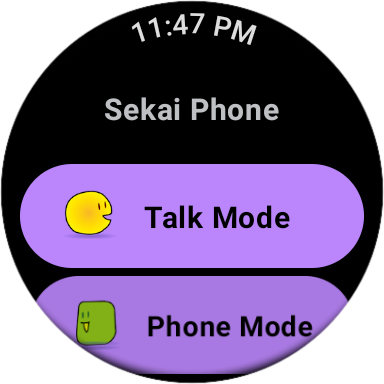
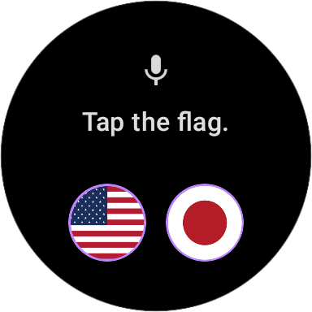
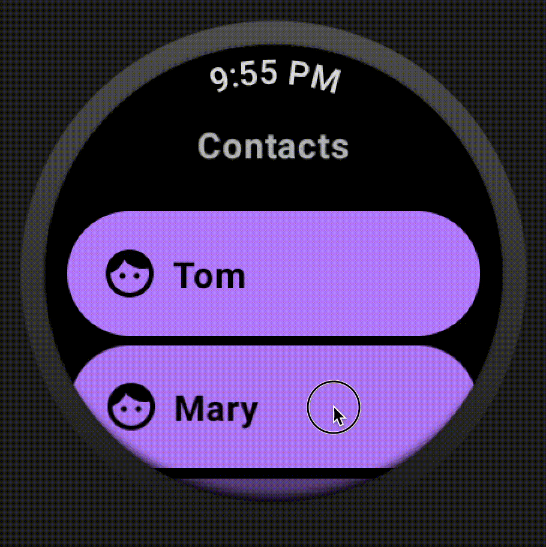
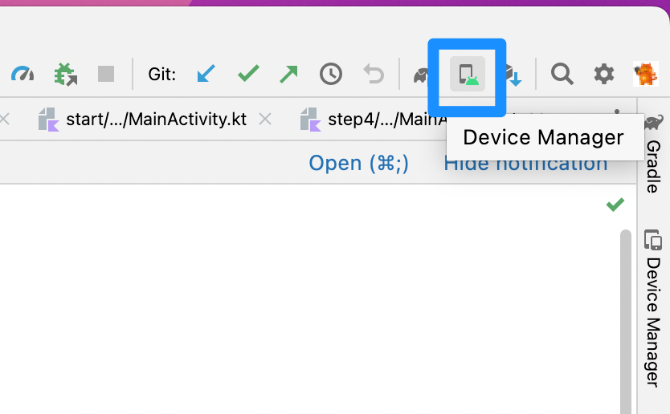
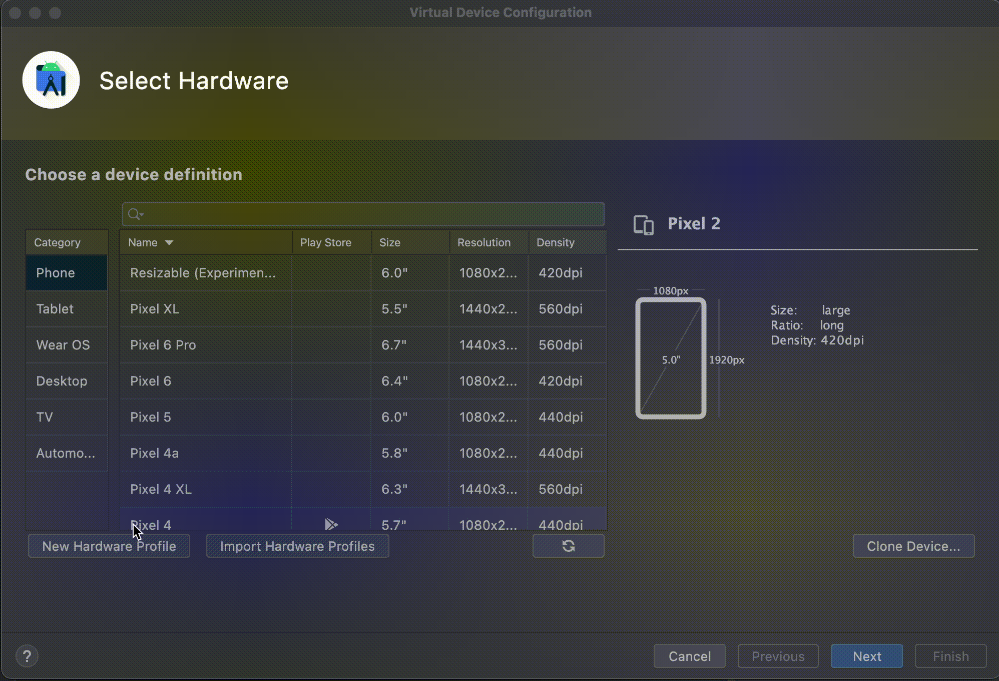
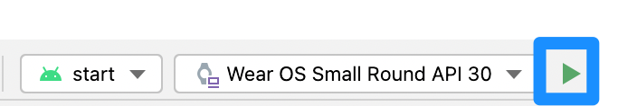
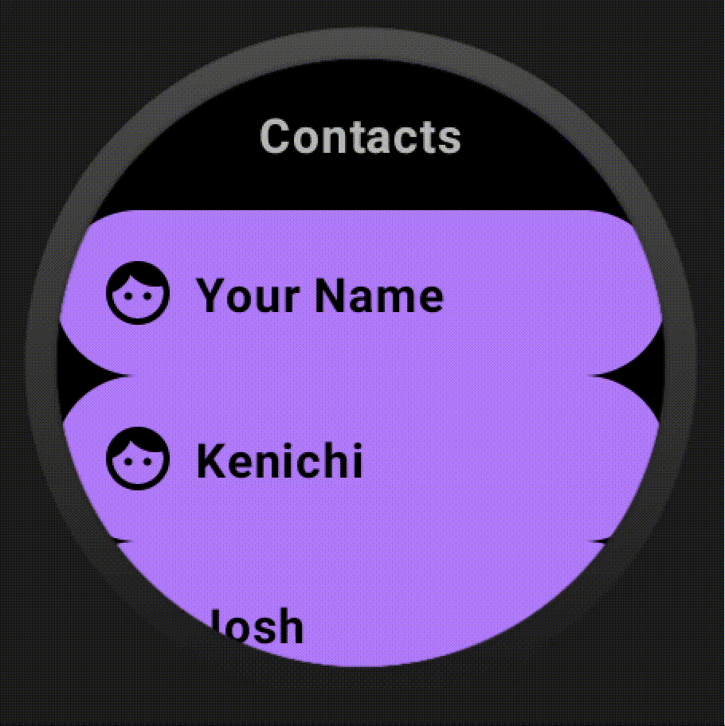

This Codelab explains how to develop WearOS Apps with Jetpack Compose.
"Compose for Wear OS" simplifies and accelerates UI development and helps you create beautiful apps with less code. Currently, it's the most recommended approach for Wear OS Apps Development.
For this codelab, we expect that you have some knowledge of Compose and Kotlin, but you certainly don't need to be an expert.
At this codelab, it starts from the basic sample. And you will learn how to improve Wear OS apps with Jetpack Compose little by little. Finally, you can start writing your own apps for Wear OS. Let's get started!

At first, you'll build a simple app that displays just a scrollable list of composables. It's just like a simple Contacts App. But there are some problems. Screens aren't opzimized for Wear OS. It includes only one screen. Also, it doesn't include any navigations.
Here are some steps for improving UI & UX.
By modifing the code little by little, finally you'll find how we develop the Wear OS screens.
Because you will be using Scaffold, you'll also get a curved text time at the top, a vignette, and finally a scrolling indicator tied to the side of the device.
Here's what it will look like when you are finished with the code lab:

Setup your Wear OS AVD images like this through Device Manager.


If you have git installed, you can simply run the command below to clone the code from this repo. To check whether git is installed, type git --version in the terminal or command line and verify that it executes correctly.
git clone https://github.com/korodroid/WearOSComposeCodelab.git
cd WearOSComposeCodelab
If you do not have git, you can click the following button to download all the code for this codelab:
[Download Location]start and finished modules on a Wear OS emulator or physical device. Also, there are some modules step1, step2, step3 and step4 for each step.start module. It's where you will be doing all your work. And just tap the Run(Green Triangle) button like this.

Look forward to your workshop day!